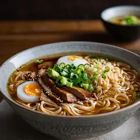
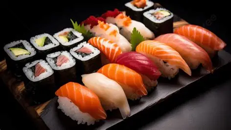
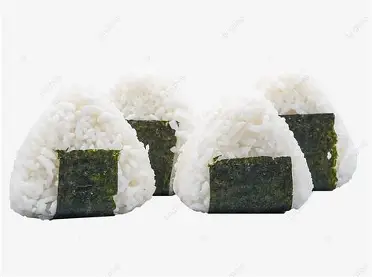

Discover Japanese Food
From steaming bowls of ramen to delicate sushi rolls — Japanese cuisine is a celebration of flavor, tradition, and craftsmanship.
Start Exploring →History of Japanese Cuisine
Japanese cuisine has developed over time, influenced by geography, religion, and cultural exchange. Traditional diets were based on rice, fish, and vegetables. Buddhism reduced meat consumption, while contact with other countries introduced new foods and cooking methods. Many modern dishes became popular during the Edo period.
Core Concepts of Japanese Cuisine
Japanese cuisine focuses on simplicity and natural flavors. It emphasizes seasonal ingredients, careful presentation, and balance. The concept of umami, a rich savory taste, is also an important part of many dishes.
Main Ingredients
Common ingredients include rice, seafood, vegetables, tofu, and seaweed. Seasonings such as soy sauce and miso are widely used. Fresh and simple ingredients are important in creating authentic Japanese flavors. — rice, soy sauce, dashi, miso, etc.
Featured Dishes

Ramen
Ramen is a popular Japanese dish consisting of wheat noodles served in a flavorful broth, topped with ingredients such as sliced pork (chashu), green onions, and bamboo shoots. There are many types of ramen, including soy sauce, miso, salt, and pork-based broths, and each region in Japan has its own unique style.

Sushi
Sushi is a traditional Japanese dish made with vinegared rice combined with seafood, vegetables, or other ingredients. There are various types of sushi, such as nigiri and maki rolls. Sushi is known for its use of fresh ingredients and its simple yet refined flavors.

Onigiri(Rice Balls)
Onigiri is a traditional Japanese food made by shaping cooked rice into a triangle or oval form by hand. It is often filled with ingredients such as pickled plum (umeboshi), salmon, or kelp, and sometimes wrapped in seaweed. Because it is portable and easy to eat, onigiri is loved by many people in Japan.
Watch: Introduction to Japanese Cuisine
You can understand about Japanese Cuisine after watching this video. 和食とは？和食の解説と進化〜和食〜 | 簡単な日本の家庭料理 — YouTube